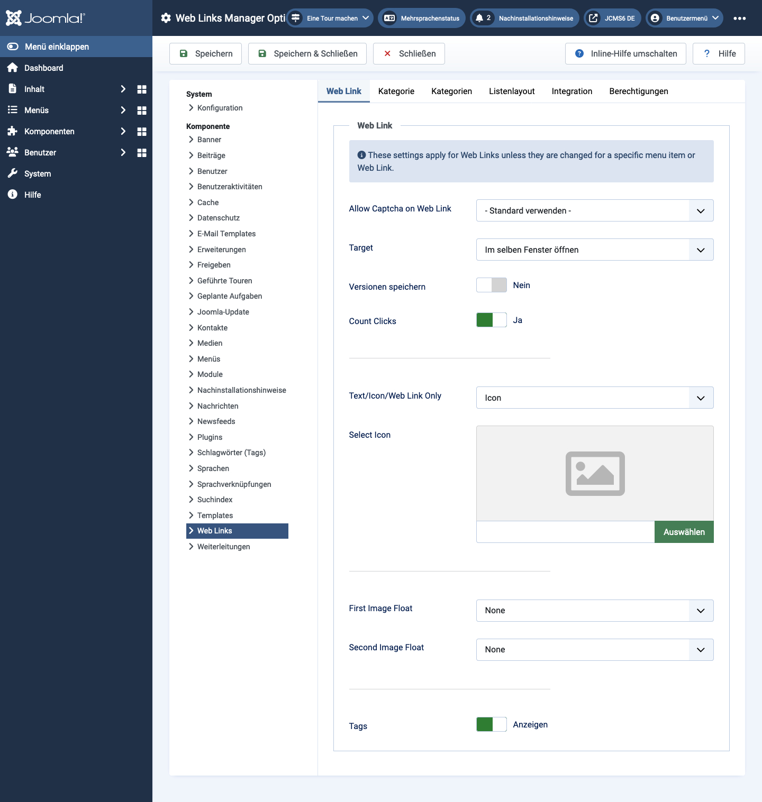

Joomla Help Screens
Weblinks Optionen
Beschreibung
Die Konfiguration der Weblinks-Optionen ermöglicht das Festlegen von Parametern, die global für alle Weblink-Menüpunkte verwendet werden.
Allgemeine Elemente
Einige Elemente dieser Seite werden in separaten Hilfsartikeln behandelt:
Zugriff
- Wählen Sie Komponenten -> Weblinks -> Links aus dem Administrator-Menü. Dann...
- Wählen Sie die Schaltfläche Optionen in der Werkzeugleiste.
Screenshot

Weblink-Tab
- Captcha für Weblink erlauben Wählen Sie das Captcha-Plugin, das im Weblink-Übermittlungsformular verwendet wird. Möglicherweise müssen Sie im Plugin-Manager die erforderlichen Informationen für Ihr Captcha-Plugin eingeben. Wenn 'Standard verwenden' ausgewählt ist, stellen Sie sicher, dass ein Captcha-Plugin in den globalen Einstellungen ausgewählt ist.
- Ziel Ziel-Browserfenster, wenn der Link ausgewählt wird.
- Klicks zählen Wenn Ja, wird die Anzahl der Klicks auf den Link erfasst.
- Text/Icon/Weblink nur Zeigt einen Text, ein Icon oder nichts zusammen mit dem Weblink. Standard ist Icon.
- Icon auswählen Hier können Sie eine Bilddatei als Standard-Icon für Weblinks auswählen. Wenn Sie auf die Schaltfläche Auswählen klicken, wird ein modales Fenster geöffnet, in dem Sie durch die Bilddateien Ihrer Website navigieren können.
- Bildposition Wo das Bild auf der Seite angezeigt wird.
- Tags anzeigen Zeigen oder verbergen Sie die Tags des Feeds.
Kategorie-Tab
Die Kategorieoptionen steuern, wie Weblinks angezeigt werden, wenn Sie zu einer Weblink-Kategorie navigieren, um deren Links anzuzeigen.
- Layout auswählen Wählen Sie das Standardlayout, das angezeigt wird, wenn Sie auf einen Kategorielink klicken. Wenn Sie ein alternatives Layout für eine Kategoriedarstellung erstellen, können Sie dieses als Standard auswählen.
- Kategorietitel Den Titel der Kategorie anzeigen oder verbergen.
- Kategoriebeschreibung Die Beschreibung der Kategorie anzeigen oder verbergen.
- Kategoriebild Das Kategoriebild anzeigen oder verbergen.
- Unterkategorie-Ebenen Wie viele Ebenen von Unterkategorien angezeigt werden sollen, wenn eine Kategorieansicht angezeigt wird.
- Leere Kategorien Kategorien anzeigen oder verbergen, die keine Elemente oder Unterkategorien enthalten.
- Unterkategorien-Beschreibungen Die Beschreibungen der angezeigten Unterkategorien anzeigen oder verbergen.
- Anzahl der Weblinks Die Anzahl der Weblinks in jeder Kategorie anzeigen oder verbergen.
- Tags anzeigen Tags für eine einzelne Kategorie anzeigen oder verbergen.
Kategorien-Tab
Diese Einstellungen gelten für die Optionen der Weblink-Kategorien, es sei denn, sie werden für einen bestimmten Menüpunkt geändert.
- Beschreibung der obersten Kategorie Die Beschreibung der obersten Kategorie anzeigen oder verbergen.
- Unterkategorie-Ebenen Wie viele Ebenen in der Hierarchie angezeigt werden sollen.
- Leere Kategorien Kategorien anzeigen oder verbergen, die keine Elemente und keine Unterkategorien enthalten.
- Unterkategorien-Beschreibungen Die Beschreibung jeder Unterkategorie anzeigen oder verbergen.
- Anzahl der Weblinks Die Anzahl der Weblinks in jeder Kategorie anzeigen oder verbergen.
Listenlayouts-Tab
Diese Einstellungen gelten für die Listenoptionen der Weblinks, es sei denn, sie werden für einen bestimmten Menüpunkt geändert.
- Filterfeld Das Filterfeld erstellt ein Textfeld, in das der Benutzer einen Wert eingeben kann, um die in der Liste angezeigten Weblinks zu filtern.
- Verbergen: Kein Filterfeld anzeigen.
- Titel: Nach Weblink-Titel filtern.
- Autor: Nach dem Namen des Autors filtern.
- Klicks: Nach der Anzahl der Klicks auf Weblinks filtern.
- Anzeigeauswahl Die Anzeigeauswahl-Steuerung anzeigen oder verbergen, mit der der Benutzer die Anzahl der in der Liste angezeigten Elemente auswählen kann.
- Tabellenüberschriften Eine Überschrift über der Tabelle der Weblinks anzeigen oder verbergen.
- Link-Beschreibung Die Beschreibung des Weblinks anzeigen oder verbergen.
- Klicks Die Anzahl der Zugriffe auf diesen Weblink anzeigen oder verbergen.
Integrations-Tab
Diese Einstellungen bestimmen, wie die Weblinks-Komponente mit anderen Erweiterungen integriert wird.
- RSS-Feed-Link URLs der Feed-Links anzeigen oder verbergen. Ein Feed-Link wird als Feed-Symbol in der Adressleiste der meisten Browser angezeigt.
- IDs aus URLs entfernen Ja oder Nein.
- Benutzerdefinierte Felder bearbeiten Ja oder Nein.
Tipps
- Wenn Sie ein Anfänger sind, können Sie die Standardwerte hier beibehalten, bis Sie mehr über die Verwendung globaler Optionen erfahren.
- Wenn Sie ein fortgeschrittener Benutzer sind, können Sie Zeit sparen, indem Sie hier gute Standardwerte festlegen. Wenn Sie Menüpunkte einrichten und Weblinks erstellen, können Sie die Standardwerte für die meisten Optionen akzeptieren.
- Alle hier festgelegten Werte können auf Menüpunkt-, Kategorie- oder Weblink-Ebene überschrieben werden.